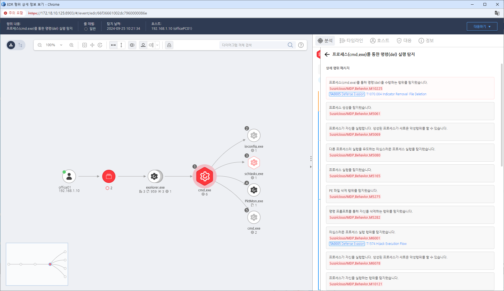

T1070.004.04 흔적 제거
D3FEND
MITRE ATT&CK 액션을 기준으로 대응 방안을 작성
Detection
Action : 명령 프롬프트를 통한 del, erase, rmdir 등을 수행
Detection(EDR)

Response
- 모니터링: 운영체제의 로그 삭제 또는 변경 활동을 탐지한다. 특히 보안 이벤트 로그나 감사 로그에서 삭제된 항목이 있는지 정기적으로 확인한다.
- 엔드포인트 보호: 로그 파일이나 로그 설정에 대한 비정상적인 접근을 탐지하는 엔드포인트 탐지 및 대응(EDR) 솔루션을 사용한다.
- 로그 무결성 확인: 중앙 집중식 로깅 솔루션을 사용하여 로그 무결성을 보장하고, 로그 파일의 변경 이력을 감시한다.
- 분석: 비정상적인 로그 제거 시도나 로그 파일 조작의 징후를 포렌식 분석을 통해 식별한다.
Mitigations
중앙 집중식 로깅
- 로그 데이터를 중앙 집중식으로 수집하여 원격지에서 로그가 제거되더라도 증거가 남도록 한다.
로그 보호
- 로그 파일에 대한 접근 권한을 최소화하고, 중요한 로그는 변조 방지 솔루션을 적용한다.
보안 정책
- 로그 삭제를 시도하는 계정에 대한 엄격한 보안 정책을 설정하고 권한을 제한한다.
감사 정책 강화
- 보안 감사 정책을 강화하여 로그 삭제 시도에 대한 경고나 알림을 트리거하도록 설정한다.
Affected Techniques
Action 실행시 함께 영향을 받는 다른 Techniqes
| D3FEND |
| D3-EVI Object Eviction |
| D3-EVI File Eviction |